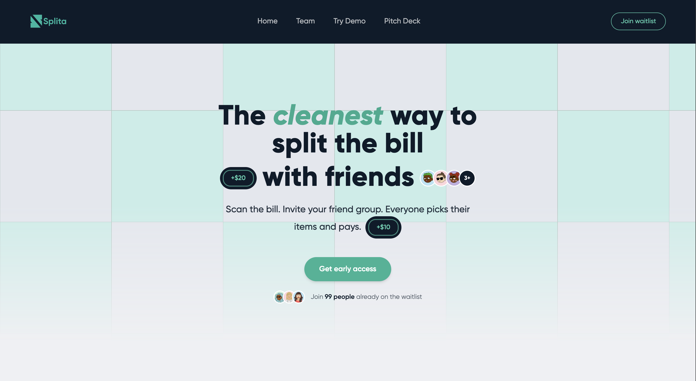
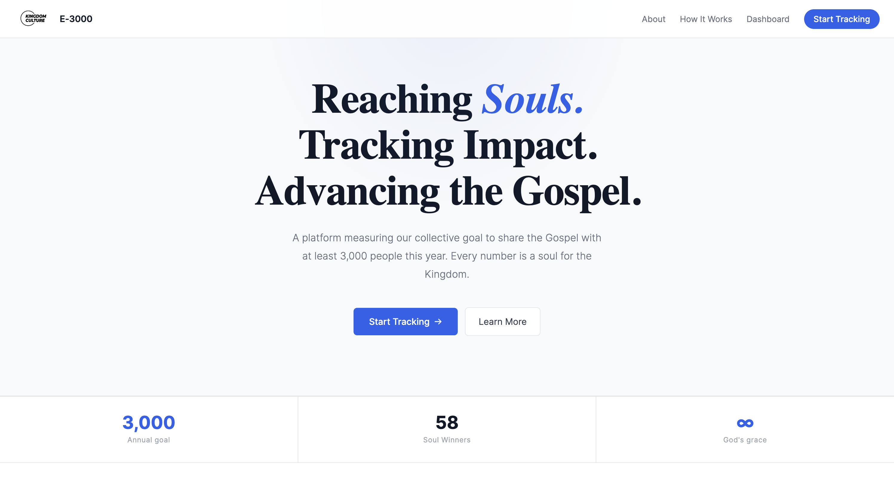
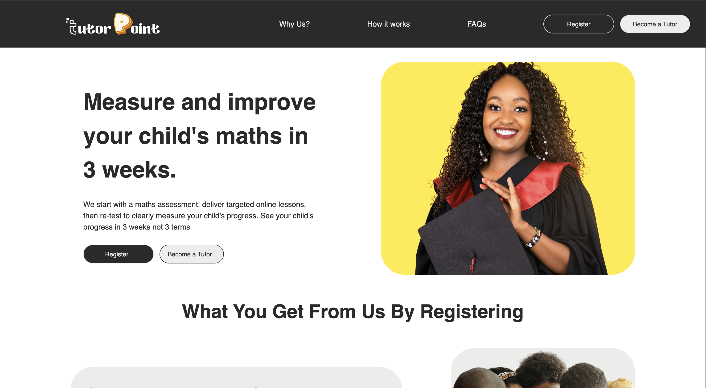
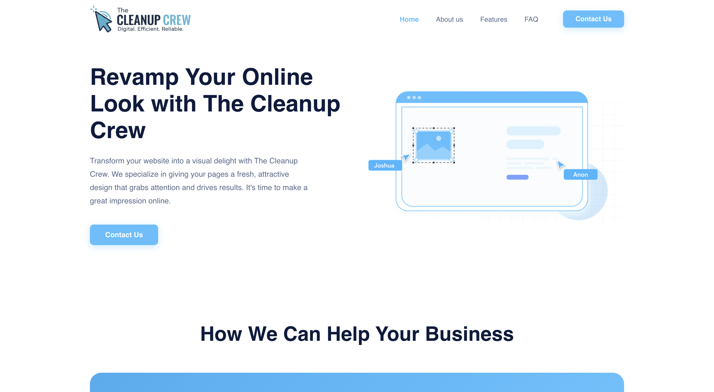

Founded and lead a tech solutions business, delivering brand enhancement, website redesigns, process
automation services.
Designed and built a secure full-stack web platform for a charity organisation to track their outreach.
Co-founded Splita, a mobile-first bill-splitting platform that collects everyone’s share upfront and issues a
virtual card to the host once all payments are confirmed, eliminating the need to front costs or chase
reimbursements.
Leading a cross-functional team of 5 developers across frontend, backend, cybersecurity, and data,
overseeing architecture decisions and sprint delivery.
Founded Tutor Point, an online maths tutoring platform connecting Nigerian students with vetted tutors for
personalised one-to-one preparation for WAEC, JAMB, NECO and GCSE examinations.
Built all onboarding funnels and automations using HTML/CSS/JS, Express, PostgreSQL, and Python,
covering student sign-ups, tutor applications, and interview pipeline management.
Engineered a tutor screening system using text recognition software to parse exam board materials into
structured JSON question banks, which are randomised and hosted through a protected portal to
administer live screening exams.
Analysed large volumes of kiosk interaction data to identify behavioural patterns, friction points, and conversion opportunities across the digital ordering journey.
Built dashboards and analytical reports using Google Analytics, Datadog, Excel, and Aternity, enabling real-time monitoring of customer flows, latency issues, and feature performance.
Worked with engineering and product teams to interpret telemetry signals, validate hypotheses, and propose data-driven improvements to kiosk UX and throughput.
Automated recurring analysis tasks and designed reproducible data workflows that increased reporting efficiency and reduced manual processing.
Presented insights to cross-functional stakeholders, influencing decisions that improved customer experience and supported revenue-driving initiatives.

Problem: Splitting group payments
Solution: Virtual Cards to collate payments.

Problem: Tracking evangelistic efforts
Solution: Logging platform that collates the details of those engaged.

Problem: Tracking impact of tutoring
Solution: Tutoring site with performance based metrics.

Problem: Unappealing websites
Solution: A website revamp service to upgrade web presence.